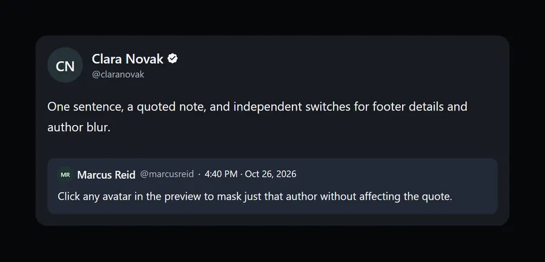

Basta ritagli manuali e screenshot. Clicca il pulsante su un post (o premi Alt + C) per copiare un singolo post o un thread dello stesso autore come nitida card 3× negli appunti, pronta da incollare ovunque. Dodici stili, renderizzati interamente sul tuo computer.
MezzanotteFondo scuro e caratteri chiari, riposante di notte.
I thread si uniscono da soli.
I post dello stesso thread vengono uniti per autore e orario, filtrando annunci e risposte estranee. Due strade: prima la cache GraphQL di X, poi il DOM renderizzato se la cache è vuota. Ogni post che non vuoi mostrare si esclude con un clic.
Tre post dello stesso autore, uno con citazione: l'intera card così come viene esportata.
Post
3
Foto
2
Citazione
1
Esporta
1472 × 2854
I post consecutivi di un autore vengono uniti; annunci e risposte di terzi restano fuori
I thread lunghi si esportano a 2× di default per restare sotto il limite di peso
Se una card risulterebbe troppo piccola nel feed, il pannello avvisa prima di esportare
Come fare uno screenshot di un tweet senza elementi superflui
Quasi tutti fanno lo screenshot di un tweet per condividerlo in una presentazione, newsletter o chat—ritrovandosi con risposte, barre laterali e testo sfocato. Ci sono tre modi comuni per trasformare un tweet in immagine, ciascuno con un compromesso chiaro.
Screenshot dal telefono
Premi i tasti su iOS o Android, poi ritaglia barra di stato, icone e la prima risposta sotto. È veloce per un post breve, ma il compromesso è la risoluzione fissa dello schermo, margini irregolari e l'impossibilità di catturare un thread lungo senza incollare più screenshot a mano.
Cattura area dal browser
Usa lo strumento di ritaglio del sistema o una scorciatoia del browser per tracciare un rettangolo attorno al post su desktop. Hai un po' più di controllo rispetto al telefono, ma resti legato al DPI del monitor, alla cornice del browser o agli stati hover, dovendo ritagliare di nuovo quando una citazione o griglia sfiora il bordo.
Renderizzare il post come card
Invece di fotografare i pixel dello schermo, leggi testo, media e struttura del thread per reimpaginarli su una tela pulita. Il compromesso degli strumenti web ospitati è dover incollare l'URL su un server terzo, aspettare API limitate o tollerare filigrane e thread spezzati.
PostPress porta la terza strada interamente nel tuo browser: clicca il pulsante card su qualsiasi post X (o premi Alt + C), scegli uno stile e copia un PNG 3× nitido negli appunti—con risposte e annunci filtrati, nessun server e nessun login.
Un tweet renderizzato localmente nello stile Mezzanotte—niente cornice del browser, niente risposte superflue.
Articoli, citazioni e griglie restano intatti.
Un Articolo X porta con sé copertina e sommario; un post citato viene riempito o bordato secondo lo stile; da una a venti immagini mantengono le proprie proporzioni nella griglia, quattro per riga oltre le prime quattro (Riempi le ritaglia quadrate).
«Non è un filtro: è carta, filetto e carattere nella giusta proporzione.»
ArticoloCopertina, occhiello, titolo e incipit escono insieme.
CitazionePiena o bordata, seguendo lo stile scelto.
ImmaginiDa una a venti conservano le proporzioni invece di essere tagliate quadrate; quattro per riga dalla quinta, o quadrate in modalità Riempi.
Otto interruttori, un unico Studio.
Stile, formato, sfondo, piè di pagina, sfocatura autore e risoluzione convivono in questa finestra Studio; cambia un'opzione e l'anteprima si aggiorna dal vivo. Le tue scelte vengono ricordate così ogni giorno ti basta aprire e cliccare Copia.
La vera finestra Studio: anteprima a sinistra e controlli a destra sincronizzati dal vivo.
Tutto attivoQR, statistiche, data, firma.

Senza pièSolo il testo.SfocatoAutore e autore citato insieme.
Gira tutto sul tuo computer, dall'inizio alla fine.
Nessun account, nessun server, nessuna telemetria. L'impaginazione avviene in uno Shadow DOM isolato e l'esportazione è disegnata dal canvas del browser stesso. Oltre a scaricare le immagini già nella card dagli host di X, nulla lascia il dispositivo.
Non legge la tua timeline, non richiede account X né API X. Non affiliato a X Corp.
clipboardWriteMette l'immagine finita negli appunti solo quando premi Copia.
storageRicorda stile, tela e interruttori; salvato solo in locale.
*.twimg.comRecupera le immagini della card. Un canvas non può leggere immagini cross-origin senza di esso.
Nel tuo browser.
Installa dal Chrome Web Store con un clic, oppure apri qui sotto i tre passaggi per compilare dai sorgenti.
Rilasciato sotto GPL-3.0-or-later: ridistribuisci le modifiche con la stessa licenza.
Per sviluppatori: compila dai sorgenti (3 passaggi)
Compila
Clona il codice, installa le dipendenze e compila. L'output finisce in dist/.
Carica
Apri chrome://extensions, attiva la modalità sviluppatore, scegli Carica estensione non pacchettizzata e seleziona la cartella dist/.
Usa
Premi il pulsante card su qualsiasi post (o passa sopra e premi Alt + C), clicca Copia immagine e incolla ovunque.
git clone https://github.com/Shirolin/postpress.git
cd postpress
pnpm install
pnpm run build # → dist/
Domande frequenti
Otto domande reali, risposte sulla destra.
Perché non fare un semplice screenshot?
Ritagliare a mano vuol dire evitare risposte, unire thread lunghi da più catture e accontentarsi del DPI dello schermo e della cornice del browser. Un clic su PostPress impagina l'intero post o thread secondo lo stile scelto e mette negli appunti una nitida immagine 3×.
Una card lunga sfoca nel feed?
Un post singolo viene esportato a 3×. Un thread molto lungo usa 2× di default per restare sotto il limite di dimensione; se diventasse troppo piccolo da leggere, il pannello avvisa e suggerisce di dividerlo. Nelle impostazioni di esportazione c'è un interruttore globale 3×.
Devo accedere o collegare X?
No. Non esiste alcun sistema di account: legge solo ciò che la pagina davanti a te ha già renderizzato e non tocca mai credenziali.
Viene caricato qualcosa online?
No. L'immagine va negli appunti e sul tuo disco; chiudendo l'anteprima il resto viene liberato. Nessun contenuto del post viene salvato.
Posso usarlo commercialmente?
Il software è GPL-3.0-or-later e libero per uso commerciale. Parole e immagini dentro una card restano dei rispettivi autori; verifica prima di ridistribuire.
Su quali browser funziona?
Chrome ed Edge, da Chrome 111 (Manifest V3). Firefox e Safari non sono ancora supportati: l'estensione è basata sulle API di estensione Chromium.
Come faccio lo screenshot di un tweet senza risposte?
Clicca il pulsante card di PostPress sul post (o passa sopra e premi Alt + C). PostPress legge solo quel post—o i post consecutivi dello stesso autore in un thread—ed esclude automaticamente annunci e risposte di terzi. Puoi anche escludere con un clic singoli post del thread prima di copiare.
Posso trasformare un tweet in PNG?
Sì. PostPress renderizza la card localmente nel browser e copia un PNG 3× direttamente negli appunti (oppure scarica il file PNG sul disco). I thread molto lunghi usano 2× di default per il limite di dimensione, con opzione 3× nelle impostazioni di esportazione.
Il tuo prossimo post merita carta.
Installa una volta e resta nella barra di ogni post. Un clic verso gli appunti, pronto da incollare ovunque.